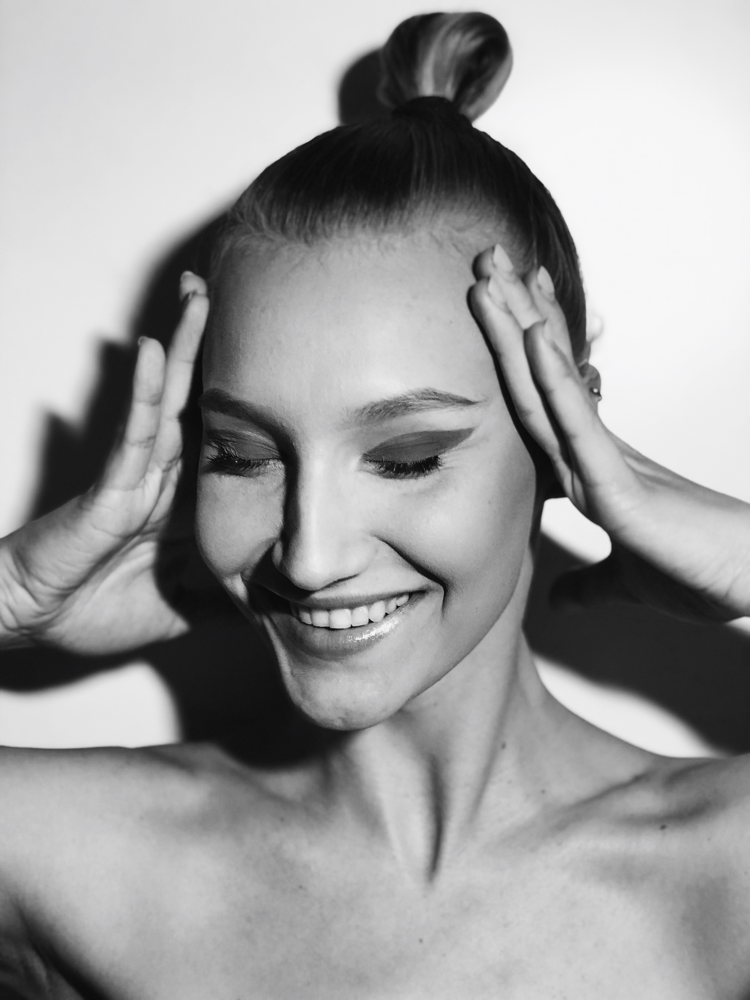

How it all started?
As I like to say, it was meant for me to do makeup. I have got into it when ballroom dancing rules made me get my makeup done. (If you are more interested in dancing you can jump right into it "LINK TO DANCE PAGE") My mom signed me up for a day camp where I was supposed to learn some beauty secrets. That camp made me realize - I love to do makeup. I was about 14 or 15 years old, so i could not start my makeup career this early. (Who would go to get their makeup done to a 15 years old teenager?)
Nezinau ar dar cia rasysiu ar tik siaip bus foto, kad ziurekit, ka gero padariau
SOME OF MY WORKS
